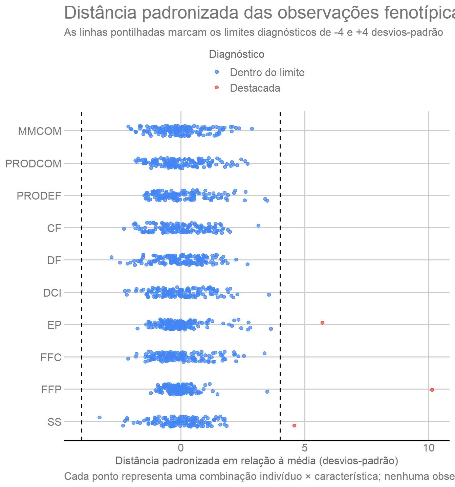

1. Objetivo
A seleção genômica exige que fenótipos e marcadores representem os
mesmos indivíduos e estejam organizados na mesma ordem. Neste módulo, as
duas fontes de dados são lidas, os identificadores são organizados, os
códigos de ausência dos SSR são convertidos em NA, os
fenótipos são alinhados aos genótipos e os locos SSR são submetidos ao
controle de qualidade.
A coluna de bloco (BL) é removida porque não participa
do modelo estatístico adotado nesta análise. A família
(FAM) é preservada porque será utilizada tanto na matriz de
efeitos fixos quanto na estratificação dos folds de validação cruzada no
Módulo 02. Nenhum indivíduo é removido neste módulo.
O pré-processamento produz três objetos centrais para as etapas seguintes: a matriz fenotípica alinhada, a matriz SSR após o controle de qualidade dos locos e os metadados com indivíduo e família. Os diagnósticos verificam a consistência desses objetos antes da construção das matrizes genômicas.
2. Pacotes utilizados
Os pacotes utilizados neste módulo têm funções distintas:
readxl: leitura das planilhas Excel com os dados genotípicos e fenotípicos;dplyr: seleção, transformação e organização das tabelas;tidyr: reorganização dos dados entre formatos largo e longo;ggplot2: construção dos gráficos de controle de qualidade e distribuição fenotípica;ggthemes: aplicação do tema e da escala de cores GDocs nas figuras;knitr: formatação de tabelas em documentos R Markdown;here: construção de caminhos de arquivos independentes do diretório local do computador.
library(readxl) # Leitura de arquivos Excel.
library(dplyr) # Manipulação e transformação de tabelas.
library(tidyr) # Reorganização de dados entre formatos largo e longo.
library(ggplot2) # Construção de gráficos.
library(ggthemes) # Tema e escala de cores GDocs.
library(knitr) # Formatação de tabelas e saídas do R Markdown.
library(here) # Construção de caminhos portáveis dentro do projeto.3. Leitura das planilhas originais
3.1 Dados genotípicos
A informação genotípica está concentrada em duas abas do arquivo de
genótipos. A aba Genes contém os códigos numéricos dos
marcadores SSR: sua primeira coluna é um índice e as 35 colunas
seguintes correspondem aos locos originais. Como essa aba não possui uma
linha com nomes de colunas, ela é lida com
col_names = FALSE.
A aba Genealex fornece os identificadores dos indivíduos
e os nomes dos locos. Ela também é lida sem cabeçalho porque preserva as
linhas de metadados e a estrutura original do formato GenAlEx. As
posições que contêm esses identificadores serão tratadas explicitamente
na seção seguinte.
genes <- read_excel(
here("data", "papaya_ssr_genotypes.xlsx"),
sheet = "Genes",
col_names = FALSE,
na = c("", "NA")
)
genealex <- read_excel(
here("data", "papaya_ssr_genotypes.xlsx"),
sheet = "Genealex",
col_names = FALSE,
na = c("", "NA")
)A estrutura inicial de Genes pode ser verificada nas
primeiras seis linhas e seis colunas:
as.data.frame(genes[1:6, 1:6]) |>
tabela_html(caption = "Prévia da aba Genes")| …1 | …2 | …3 | …4 | …5 | …6 |
|---|---|---|---|---|---|
| 1 | 12 | 12 | 22 | 12 | 22 |
| 1 | 22 | 22 | 22 | 12 | 12 |
| 1 | 12 | 12 | 12 | 11 | 22 |
| 1 | 22 | 12 | 22 | 22 | 22 |
| 1 | 12 | 12 | 22 | 12 | 22 |
| 1 | 12 | 12 | 22 | 11 | 22 |
A prévia mostra o formato bruto dos genótipos: a primeira coluna é um índice sequencial e as colunas seguintes contêm os códigos SSR que serão organizados na seção seguinte.
3.2 Dados fenotípicos
Os dados fenotípicos estão na aba Médias_IND_artigo, que
já possui nomes de colunas. Essa fonte contém os identificadores dos
indivíduos, a família e as características avaliadas.
A coluna BL, correspondente ao bloco experimental, é
mantida neste primeiro momento para que pheno_raw
represente fielmente a planilha original. Como BL não
participa do modelo estatístico adotado, ela será deixada de fora quando
o conjunto de colunas analíticas for definido na Seção 5.
pheno_raw <- read_excel(
here("data", "papaya_phenotypes_2024_2025.xlsx"),
sheet = "Médias_IND_artigo",
na = c("", "NA")
)A tabela fenotípica é inspecionada ainda em sua forma original:
head(pheno_raw) |>
tabela_html(caption = "Prévia dos dados fenotípicos originais")| IND | BL | FAM | MMCOM | PRODCOM | PRODEF | CF | DF | DCI | EP | FFC | FFP | SS |
|---|---|---|---|---|---|---|---|---|---|---|---|---|
| 1 | 9 | 1 | 1.17127 | 81.98890 | 22.77781 | 23.30 | 10.000 | 5.065 | 2.955 | 5.65 | 1.18 | 14.40 |
| 2 | 8 | 1 | 1.06666 | 119.46592 | 6.33200 | 20.52 | 7.768 | 4.586 | 2.332 | 5.44 | 1.03 | 13.26 |
| 3 | 5 | 1 | 0.98358 | 76.71924 | 15.42794 | 21.48 | 8.229 | 4.782 | 2.637 | 3.54 | 0.90 | 14.70 |
| 4 | 8 | 1 | 1.08053 | 88.60346 | 8.94500 | 21.32 | 8.394 | 4.324 | 2.335 | 3.61 | 1.04 | 14.00 |
| 5 | 2 | 1 | 0.95089 | 53.24984 | 5.32100 | 18.40 | 10.120 | 4.988 | 2.588 | 6.16 | 1.18 | 14.30 |
| 6 | 7 | 1 | 0.74452 | 54.34996 | 2.69800 | 18.36 | 9.074 | 4.461 | 2.301 | 5.70 | 1.29 | 15.80 |
A prévia mostra a estrutura da planilha fenotípica antes da seleção
das variáveis analíticas, incluindo IND, FAM,
BL e as dez características avaliadas.
3.3 Verificação inicial das fontes
Antes de organizar e alinhar os dados, as dimensões das três
estruturas importadas são comparadas. Essa verificação é estrutural:
Genes contém os códigos genotípicos, Genealex
preserva os metadados do formato GenAlEx e pheno_raw
preserva a planilha fenotípica original.
data.frame(
Fonte = c("Genes", "Genealex", "Médias_IND_artigo"),
Linhas = c(nrow(genes), nrow(genealex), nrow(pheno_raw)),
Colunas = c(ncol(genes), ncol(genealex), ncol(pheno_raw))
) |>
tabela_html(caption = "Dimensões das planilhas utilizadas")| Fonte | Linhas | Colunas |
|---|---|---|
| Genes | 150 | 36 |
| Genealex | 153 | 72 |
| Médias_IND_artigo | 150 | 13 |
A tabela confirma que Genes contém 150 indivíduos e 35
colunas correspondentes aos locos SSR, além da primeira coluna de
índice. A tabela fenotípica contém 150 indivíduos. A aba
Genealex possui uma estrutura de metadados própria e, por
isso, suas dimensões não devem ser interpretadas como uma matriz de
marcadores.
4. Organização dos dados SSR
4.1 Identificadores dos indivíduos e dos locos
A primeira coluna da aba Genes contém um índice
sequencial de grupos populacionais e não representa a variável
fenotípica FAM. As 35 colunas restantes correspondem aos
locos SSR originais.
Na aba Genealex, os identificadores dos indivíduos
começam na quarta linha da segunda coluna, após as três linhas de
metadados. Os nomes dos locos começam na terceira coluna e aparecem a
cada duas colunas. O número de indivíduos e de locos a recuperar é
obtido diretamente das dimensões da aba Genes.
individual_rows <- seq(
from = 4,
length.out = nrow(genes)
)
locus_columns <- seq(
from = 3,
by = 2,
length.out = ncol(genes) - 1
)
ids <- trimws(
as.character(genealex[[2]][individual_rows])
)
locus_names <- trimws(
as.character(
unlist(genealex[3, locus_columns], use.names = FALSE)
)
)Antes de construir a matriz SSR, verificamos os identificadores
recuperados da estrutura GenAlEx. Essa checagem permanece junto da etapa
que criou ids e locus_names, facilitando a
interpretação de eventuais inconsistências.
ssr_identifier_checks <- data.frame(
Verificacao = c(
"Identificadores genotípicos ausentes",
"Identificadores genotípicos duplicados",
"Nomes de locos ausentes",
"Nomes de locos duplicados"
),
Valor = c(
sum(is.na(ids) | ids == ""),
sum(duplicated(ids)),
sum(is.na(locus_names) | locus_names == ""),
sum(duplicated(locus_names))
)
)
tabela_html(
ssr_identifier_checks,
caption = "Verificação dos identificadores genotípicos e dos locos"
)| Verificacao | Valor |
|---|---|
| Identificadores genotípicos ausentes | 0 |
| Identificadores genotípicos duplicados | 0 |
| Nomes de locos ausentes | 0 |
| Nomes de locos duplicados | 0 |
As verificações apresentam 0 ocorrências problemáticas, confirmando que os identificadores dos indivíduos e os nomes dos locos podem ser usados na construção da matriz SSR.
4.2 Construção da matriz SSR
Com os identificadores recuperados, a primeira coluna de
Genes é retirada e as 35 colunas de marcadores formam
ssr_raw. Os códigos são armazenados numericamente e
-9, usado no arquivo original para representar chamadas
ausentes, é convertido em NA.
Assim, ssr_raw preserva os genótipos originais, mas
passa a ter indivíduos nas linhas, locos nas colunas e uma representação
explícita dos dados ausentes.
ssr_raw <- as.matrix(
genes[, -1, drop = FALSE]
)
storage.mode(ssr_raw) <- "numeric"
ssr_raw[ssr_raw == -9] <- NA_real_
rownames(ssr_raw) <- ids
colnames(ssr_raw) <- locus_names
as.data.frame(ssr_raw[1:6, 1:8]) |>
tabela_html(caption = "Prévia da matriz SSR organizada")| P3K4813A0 | CPM1598CC | CPM1814A5 | P3K1433CC | P3K5593C0 | CPM746LCC | P6K128CC | P3K3256CC |
|---|---|---|---|---|---|---|---|
| 12 | 12 | 22 | 12 | 22 | 11 | 11 | 33 |
| 22 | 22 | 22 | 12 | 12 | 12 | 12 | 33 |
| 12 | 12 | 12 | 11 | 22 | 12 | 12 | 33 |
| 22 | 12 | 22 | 22 | 22 | 12 | 11 | 33 |
| 12 | 12 | 22 | 12 | 22 | 11 | 11 | 33 |
| 12 | 12 | 22 | 11 | 22 | 11 | 11 | 33 |
4.3 Interpretação dos códigos SSR
Os códigos SSR representam os dois alelos observados em cada
indivíduo. Por exemplo, 12 indica um alelo 1 e um alelo 2,
22 indica duas cópias do alelo 2 e 33 indica
duas cópias do alelo 3.
O valor 33 observado em P3K3256CC não
representa erro ou categoria especial: esse loco é multialélico e inclui
o alelo 3 no painel. No Módulo 02, esses códigos serão decompostos em
dosagens de 0, 1 ou 2 cópias para cada alelo observado.
5. Organização e alinhamento dos fenótipos
Esta etapa transforma a tabela fenotípica bruta em objetos alinhados à matriz SSR. O processo é apresentado em quatro partes: definição das características, verificação e correspondência dos indivíduos, alinhamento efetivo e separação entre metadados e fenótipos numéricos.
5.1 Características utilizadas
São utilizadas dez características fenotípicas, identificadas pelos mesmos códigos ao longo de todos os módulos.
# Define as características utilizadas na análise.
TRAITS <- c(
"MMCOM", "PRODCOM", "PRODEF", "CF", "DF",
"DCI", "EP", "FFC", "FFP", "SS"
)O dicionário associa os códigos usados no código às descrições biológicas e às unidades de medida. Essa tabela é importante porque as dez características estão em escalas diferentes e os mesmos códigos serão utilizados nos módulos de modelagem e resultados.
# Associa a cada característica suas descrições em português e inglês e sua unidade de medida.
trait_dictionary <- data.frame(
Trait = TRAITS,
Description_en = c(
"Mean mass of commercial fruit",
"Production of commercial fruit",
"Production of defective fruit",
"Fruit length",
"Fruit diameter",
"Internal-cavity diameter",
"Mean pulp thickness",
"External fruit firmness",
"Internal pulp firmness",
"Soluble solids"
),
Description_pt = c(
"Massa média de frutos comerciais",
"Produção de frutos comerciais",
"Produção de frutos defeituosos",
"Comprimento do fruto",
"Diâmetro do fruto",
"Diâmetro da cavidade interna",
"Espessura média da polpa",
"Firmeza externa do fruto",
"Firmeza interna da polpa",
"Sólidos solúveis"
),
Unit = c(
"kg", "kg", "kg", "cm", "cm",
"cm", "cm", "N", "N", "°Brix"
)
)
rownames(trait_dictionary) <- NULL
tabela_html(
trait_dictionary[, c("Trait", "Description_pt", "Unit")],
caption = "Dicionário das características fenotípicas",
col.names = c("Característica", "Descrição", "Unidade")
)| Característica | Descrição | Unidade |
|---|---|---|
| MMCOM | Massa média de frutos comerciais | kg |
| PRODCOM | Produção de frutos comerciais | kg |
| PRODEF | Produção de frutos defeituosos | kg |
| CF | Comprimento do fruto | cm |
| DF | Diâmetro do fruto | cm |
| DCI | Diâmetro da cavidade interna | cm |
| EP | Espessura média da polpa | cm |
| FFC | Firmeza externa do fruto | N |
| FFP | Firmeza interna da polpa | N |
| SS | Sólidos solúveis | °Brix |
O dicionário evidencia que produção e massa são expressas em kg, dimensões dos frutos em cm, firmeza em N e sólidos solúveis em °Brix. Essa diferença de unidades explica por que as escalas numéricas das características não devem ser comparadas diretamente.
5.2 Colunas analíticas e correspondência entre indivíduos
Antes de reordenar qualquer linha, definimos as colunas que formarão
a tabela analítica. BL fica de fora porque não participa do
modelo estatístico adotado. Em seguida, verificamos os identificadores
fenotípicos e comparamos o conjunto de plantas das duas fontes.
# Define as colunas analíticas; BL fica de fora porque não participa do modelo.
required_columns <- c("IND", "FAM", TRAITS)
# Padroniza os identificadores fenotípicos antes da comparação com os genótipos.
pheno_raw$IND <- trimws(as.character(pheno_raw$IND))
phenotype_checks <- data.frame(
Verificacao = c(
"Identificadores fenotípicos ausentes",
"Identificadores fenotípicos duplicados",
"Colunas fenotípicas obrigatórias ausentes"
),
Valor = c(
sum(is.na(pheno_raw$IND) | pheno_raw$IND == ""),
sum(duplicated(pheno_raw$IND)),
length(setdiff(required_columns, names(pheno_raw)))
)
)
tabela_html(
phenotype_checks,
caption = "Verificação dos identificadores e das colunas fenotípicas"
)| Verificacao | Valor |
|---|---|
| Identificadores fenotípicos ausentes | 0 |
| Identificadores fenotípicos duplicados | 0 |
| Colunas fenotípicas obrigatórias ausentes | 0 |
alignment <- data.frame(
Verificacao = c(
"Indivíduos genotipados",
"Indivíduos fenotipados",
"Ausentes nos dados fenotípicos",
"Ausentes nos dados genotípicos"
),
Valor = c(
length(ids),
nrow(pheno_raw),
length(setdiff(ids, pheno_raw$IND)),
length(setdiff(pheno_raw$IND, ids))
)
)
tabela_html(
alignment,
caption = "Alinhamento entre os dados genotípicos e fenotípicos"
)| Verificacao | Valor |
|---|---|
| Indivíduos genotipados | 150 |
| Indivíduos fenotipados | 150 |
| Ausentes nos dados fenotípicos | 0 |
| Ausentes nos dados genotípicos | 0 |
As verificações fenotípicas apresentam 0 ocorrências problemáticas. A tabela de alinhamento confirma 150 indivíduos genotipados e 150 indivíduos fenotipados, sem plantas presentes em apenas uma das fontes. Assim, o alinhamento pode ser realizado sem descartar indivíduos.
5.3 Alinhamento efetivo dos fenótipos
Somente depois das verificações anteriores os fenótipos são reordenados para seguir exatamente a sequência dos indivíduos na matriz SSR.
# Reordena os fenótipos para a mesma sequência dos indivíduos genotipados.
pheno <- pheno_raw[
match(ids, pheno_raw$IND),
required_columns
]5.4 Metadados e matriz fenotípica
Depois do alinhamento, metadata mantém IND
e FAM, enquanto phenotypes contém somente as
dez características numéricas. Assim, a família permanece categórica e
não é misturada aos fenótipos.
# Separa os metadados; FAM permanece categórica e não é incorporada aos fenótipos numéricos.
metadata <- data.frame(
IND = pheno$IND,
FAM = factor(pheno$FAM),
row.names = pheno$IND
)
# Constrói a matriz fenotípica numérica na mesma ordem dos indivíduos genotipados.
phenotypes <- as.matrix(pheno[, TRAITS])
storage.mode(phenotypes) <- "numeric"
rownames(phenotypes) <- pheno$IND
# Distribuição dos indivíduos entre as famílias.
data.frame(
Familia = names(table(metadata$FAM)),
Individuos = as.integer(table(metadata$FAM))
) |>
tabela_html(caption = "Número de indivíduos por família")| Familia | Individuos |
|---|---|
| 1 | 15 |
| 2 | 15 |
| 3 | 15 |
| 4 | 15 |
| 5 | 15 |
| 6 | 15 |
| 7 | 15 |
| 8 | 15 |
| 9 | 15 |
| 10 | 15 |
Após a reorganização, FAM contém 10 famílias, com
tamanhos entre 15 e 15 indivíduos. Essa distribuição será usada para
estratificar os cinco folds de validação cruzada no Módulo 02.
6. Controle de qualidade dos marcadores
6.1 Critérios de retenção dos locos
O controle de qualidade considera duas propriedades de cada loco: a proporção de indivíduos com genótipo observado e o número de classes genotípicas presentes. Um loco é mantido quando apresenta taxa de chamada de pelo menos 0,90 — equivalente a 135 dos 150 indivíduos — e pelo menos duas classes genotípicas.
Esses critérios distinguem falta de dados de ausência de variação.
Assim, um loco com alta taxa de chamada ainda pode ser removido se for
monomórfico no painel. O filtro atua somente sobre os locos:
ssr_raw preserva a matriz original para diagnóstico,
enquanto ssr contém os locos que seguem para a codificação
alélica no Módulo 02.
# Define o limiar de taxa de chamada imediatamente antes de aplicá-lo no controle de qualidade.
CALL_RATE_MIN <- 0.90
# Resume, para cada loco, completude e diversidade genotípica.
locus_audit <- data.frame(
Locus = colnames(ssr_raw),
N_called = colSums(!is.na(ssr_raw)),
Call_rate = colMeans(!is.na(ssr_raw)),
N_genotype_classes = apply(
ssr_raw,
2,
function(genotypes) length(unique(na.omit(genotypes)))
)
)
locus_audit$Keep_locus <-
locus_audit$Call_rate >= CALL_RATE_MIN &
locus_audit$N_genotype_classes >= 2
# Mantém na matriz SSR apenas os locos que passaram os critérios de qualidade.
ssr <- ssr_raw[, locus_audit$Keep_locus, drop = FALSE]
tabela_html(
locus_audit,
digits = 3,
caption = "Controle de qualidade dos locos SSR",
col.names = c("Loco", "Genótipos observados", "Taxa de chamada", "Classes genotípicas", "Manter loco")
)| Loco | Genótipos observados | Taxa de chamada | Classes genotípicas | Manter loco | |
|---|---|---|---|---|---|
| P3K4813A0 | P3K4813A0 | 137 | 0.913 | 3 | TRUE |
| CPM1598CC | CPM1598CC | 147 | 0.980 | 3 | TRUE |
| CPM1814A5 | CPM1814A5 | 146 | 0.973 | 3 | TRUE |
| P3K1433CC | P3K1433CC | 138 | 0.920 | 3 | TRUE |
| P3K5593C0 | P3K5593C0 | 147 | 0.980 | 3 | TRUE |
| CPM746LCC | CPM746LCC | 147 | 0.980 | 3 | TRUE |
| P6K128CC | P6K128CC | 144 | 0.960 | 3 | TRUE |
| P3K3256CC | P3K3256CC | 149 | 0.993 | 5 | TRUE |
| P3K3511CC | P3K3511CC | 148 | 0.987 | 3 | TRUE |
| ctg64CC | ctg64CC | 148 | 0.987 | 2 | TRUE |
| P6K900CC | P6K900CC | 150 | 1.000 | 3 | TRUE |
| P3K7484 | P3K7484 | 135 | 0.900 | 2 | TRUE |
| P3K149C0 | P3K149C0 | 149 | 0.993 | 5 | TRUE |
| ctg718CC | ctg718CC | 139 | 0.927 | 3 | TRUE |
| P6K1129CC | P6K1129CC | 150 | 1.000 | 1 | FALSE |
| P3K6372CC | P3K6372CC | 147 | 0.980 | 3 | TRUE |
| CPM2197CC | CPM2197CC | 147 | 0.980 | 3 | TRUE |
| ctg395CC | ctg395CC | 150 | 1.000 | 2 | TRUE |
| P3K2937CC | P3K2937CC | 145 | 0.967 | 3 | TRUE |
| CPM1125LCC | CPM1125LCC | 150 | 1.000 | 3 | TRUE |
| P3K3317CC | P3K3317CC | 150 | 1.000 | 3 | TRUE |
| P3K2152CC | P3K2152CC | 150 | 1.000 | 3 | TRUE |
| P6K673C0 | P6K673C0 | 149 | 0.993 | 3 | TRUE |
| CPM710CC | CPM710CC | 148 | 0.987 | 3 | TRUE |
| CPM1747CC | CPM1747CC | 150 | 1.000 | 3 | TRUE |
| P3K896CC | P3K896CC | 150 | 1.000 | 3 | TRUE |
| P3K2426CC | P3K2426CC | 147 | 0.980 | 2 | TRUE |
| P3K3473CC | P3K3473CC | 140 | 0.933 | 2 | TRUE |
| ctg706CC | ctg706CC | 138 | 0.920 | 3 | TRUE |
| P3K7483A5 | P3K7483A5 | 141 | 0.940 | 3 | TRUE |
| ctg407S0 | ctg407S0 | 150 | 1.000 | 3 | TRUE |
| P3K4426C0 | P3K4426C0 | 150 | 1.000 | 4 | TRUE |
| P3K178CC | P3K178CC | 150 | 1.000 | 3 | TRUE |
| P3K6568CC | P3K6568CC | 149 | 0.993 | 4 | TRUE |
| ctg32A0 | ctg32A0 | 149 | 0.993 | 3 | TRUE |
6.2 Resultado do controle de qualidade
Dos 35 locos avaliados, 34 atendem simultaneamente aos critérios de taxa de chamada e variabilidade genotípica. O loco removido é P6K1129CC; sua exclusão decorre da ausência de variação genotípica suficiente no painel, e não de remoção de indivíduos.
6.3 Visualização da taxa de chamada
A figura resume simultaneamente a completude dos locos e a decisão final do controle de qualidade. Cada barra representa a proporção de genótipos observados em um loco, e a linha pontilhada marca a taxa mínima de chamada de 0,90. As cores seguem a decisão final de retenção: atingir 0,90 é necessário, mas o loco também precisa apresentar pelo menos duas classes genotípicas.
ggplot(
locus_audit,
aes(
x = reorder(Locus, Call_rate),
y = Call_rate,
fill = factor(
Keep_locus,
levels = c(TRUE, FALSE),
labels = c("Mantido", "Removido")
)
)
) +
geom_col(width = 0.8) +
geom_hline(
yintercept = CALL_RATE_MIN,
linetype = 2,
linewidth = 0.6
) +
coord_flip() +
scale_y_continuous(
limits = c(0, 1),
breaks = seq(0, 1, 0.2),
labels = paste0(seq(0, 100, 20), "%"),
expand = expansion(mult = c(0, 0.02))
) +
scale_fill_gdocs(name = "Decisão") +
labs(
x = NULL,
y = "Taxa de chamada",
title = "Completude e retenção dos locos SSR",
subtitle = "A linha pontilhada marca a taxa mínima de chamada de 90%; a retenção também exige pelo menos duas classes genotípicas",
caption = "A cor representa a decisão final do controle de qualidade, e não apenas a taxa de chamada."
) +
theme_gdocs() +
theme(
legend.position = "top",
axis.text.y = element_text(size = 8)
)
A leitura da figura deve combinar altura e cor das barras. A altura informa a completude do loco, enquanto a cor informa o resultado dos dois critérios usados em conjunto. Por isso, um loco pode alcançar ou ultrapassar a linha de 90% e ainda assim ser removido se apenas uma classe genotípica estiver representada. A figura não indica exclusão de indivíduos; o filtro atua somente sobre os locos.
7. Completude genotípica por indivíduo
A completude genotípica também é resumida por indivíduo usando os 35 locos originais. Para cada planta são registrados o número e a proporção de chamadas SSR disponíveis. Essa informação é apenas diagnóstica: nenhum limiar de completude é usado para excluir indivíduos, e todos os 150 indivíduos alinhados permanecem nas etapas seguintes.
# Calcula, nos locos originais, a quantidade e a proporção de chamadas disponíveis por indivíduo.
individual_audit <- data.frame(
IND = rownames(ssr_raw),
N_called = rowSums(!is.na(ssr_raw)),
Call_rate = rowMeans(!is.na(ssr_raw))
)
rownames(individual_audit) <- NULL
data.frame(
Medida = c("Mínimo", "Média", "Mediana", "Máximo"),
# Lista as taxas de chamada usadas no resumo por indivíduo.
Call_rate = c(
min(individual_audit$Call_rate),
mean(individual_audit$Call_rate),
median(individual_audit$Call_rate),
max(individual_audit$Call_rate)
)
) |>
tabela_html(
digits = 3,
caption = "Distribuição da taxa de chamada SSR por indivíduo",
col.names = c("Medida", "Taxa de chamada")
)| Medida | Taxa de chamada |
|---|---|
| Mínimo | 0.914 |
| Média | 0.976 |
| Mediana | 0.971 |
| Máximo | 1.000 |
A taxa de chamada por indivíduo varia de 91.4% a 100.0%, com média de 97.6%. Como não há regra de exclusão por indivíduo, essas diferenças são registradas apenas como informação de completude genotípica.
8. Caracterização dos fenótipos
8.1 Estatísticas descritivas
As estatísticas descritivas permitem verificar diretamente a escala,
a dispersão e a amplitude das dez características antes de qualquer
ajuste de predição. N também confirma a disponibilidade de
fenótipos por característica. Nenhuma transformação ou padronização
permanente dos fenótipos é realizada nesta etapa; os valores originais
são preservados para os modelos.
# Resume diretamente disponibilidade, posição, dispersão e amplitude de cada característica.
phenotype_summary <- data.frame(
Trait = colnames(phenotypes),
N = colSums(!is.na(phenotypes)),
Mean = colMeans(phenotypes),
SD = apply(phenotypes, 2, sd),
Minimum = apply(phenotypes, 2, min),
Maximum = apply(phenotypes, 2, max)
)
rownames(phenotype_summary) <- NULL
tabela_html(
phenotype_summary,
digits = 3,
caption = "Resumo das características fenotípicas"
)| Trait | N | Mean | SD | Minimum | Maximum |
|---|---|---|---|---|---|
| MMCOM | 150 | 1.181 | 0.266 | 0.620 | 1.943 |
| PRODCOM | 150 | 63.510 | 21.518 | 24.225 | 121.609 |
| PRODEF | 150 | 6.990 | 4.637 | 0.200 | 23.142 |
| CF | 150 | 23.247 | 2.665 | 17.140 | 31.580 |
| DF | 150 | 10.143 | 1.108 | 7.049 | 13.129 |
| DCI | 150 | 4.825 | 0.815 | 2.998 | 7.719 |
| EP | 150 | 2.887 | 0.462 | 2.080 | 5.523 |
| FFC | 150 | 4.150 | 1.147 | 1.720 | 8.020 |
| FFP | 150 | 1.057 | 0.561 | 0.380 | 6.740 |
| SS | 150 | 13.731 | 1.171 | 9.900 | 19.100 |
Todas as dez características apresentam 150 observações disponíveis, confirmando ausência de dados fenotípicos faltantes nas variáveis analisadas. A média localiza o centro de cada distribuição, o desvio-padrão resume sua dispersão e os valores mínimo e máximo delimitam a amplitude observada. Como as características utilizam unidades diferentes, essas medidas devem ser interpretadas dentro de cada característica e não comparadas diretamente entre escalas distintas.
8.2 Observações fenotípicas distantes da média
Os valores padronizados permitem comparar a distância de cada observação em relação à média de sua própria característica, independentemente da unidade original. Para cada característica, calcula-se
\[ z = \frac{y-\bar{y}}{s}, \]
em que \(y\) é o valor observado,
\(\bar{y}\) é a média e \(s\) é o desvio-padrão amostral. As médias e
os desvios-padrão já calculados em phenotype_summary são
reutilizados nesta etapa, evitando repetir os mesmos cálculos.
Observações cuja distância padronizada absoluta é de pelo menos quatro desvios-padrão são destacadas para inspeção. Esse limiar é apenas diagnóstico: nenhuma observação é removida, limitada ou transformada por esse critério.
# Define o limiar diagnóstico imediatamente antes de identificar observações distantes da média.
PHENOTYPE_DISTANCE_THRESHOLD <- 4
# Padroniza cada característica usando a média e o desvio-padrão já resumidos na seção anterior.
phenotype_standardized <- scale(
phenotypes,
center = phenotype_summary$Mean,
scale = phenotype_summary$SD
)
# Localiza as observações cuja distância padronizada alcança o limite definido.
extreme_positions <- which(
abs(phenotype_standardized) >= PHENOTYPE_DISTANCE_THRESHOLD,
arr.ind = TRUE
)
phenotype_extremes <- data.frame(
IND = rownames(phenotypes)[extreme_positions[, "row"]],
Trait = colnames(phenotypes)[extreme_positions[, "col"]],
Value = phenotypes[extreme_positions],
Trait_mean = phenotype_summary$Mean[extreme_positions[, "col"]],
Trait_SD = phenotype_summary$SD[extreme_positions[, "col"]],
Standardized_value = phenotype_standardized[extreme_positions],
Absolute_standardized_distance = abs(
phenotype_standardized[extreme_positions]
)
)
# Ordena somente a tabela diagnóstica; a matriz `phenotypes` permanece inalterada.
phenotype_extremes <- phenotype_extremes[
order(-phenotype_extremes$Absolute_standardized_distance),
]
rownames(phenotype_extremes) <- NULL
tabela_html(
phenotype_extremes,
digits = 3,
col.names = c(
"Indivíduo",
"Característica",
"Valor",
"Média da característica",
"Desvio-padrão da característica",
"Valor padronizado",
"Distância padronizada absoluta"
),
caption = paste0(
"Observações fenotípicas a pelo menos ",
PHENOTYPE_DISTANCE_THRESHOLD,
" desvios-padrão da média"
)
)| Indivíduo | Característica | Valor | Média da característica | Desvio-padrão da característica | Valor padronizado | Distância padronizada absoluta |
|---|---|---|---|---|---|---|
| 97 | FFP | 6.740 | 1.057 | 0.561 | 10.133 | 10.133 |
| 89 | EP | 5.523 | 2.887 | 0.462 | 5.707 | 5.707 |
| 20 | SS | 19.100 | 13.731 | 1.171 | 4.586 | 4.586 |
Foram destacadas 3 observações com distância padronizada de pelo menos 4 desvios-padrão. A tabela identifica o indivíduo, a característica, o valor original e sua distância em unidades de desvio-padrão, permitindo inspecionar cada caso sem alterar os dados usados posteriormente.
A figura seguinte mostra o mesmo diagnóstico para todas as 1.500 combinações indivíduo × característica. Valores próximos de zero estão próximos da média da respectiva característica; valores negativos e positivos indicam observações abaixo ou acima dessa média. Como o eixo está em unidades de desvio-padrão, as dez características podem ser comparadas na mesma escala diagnóstica.
data.frame(
IND = rownames(phenotypes),
as.data.frame(phenotype_standardized, check.names = FALSE),
check.names = FALSE
) |>
pivot_longer(
cols = -IND,
names_to = "Trait",
values_to = "Standardized_value"
) |>
mutate(
Trait = factor(Trait, levels = rev(TRAITS)),
Diagnostico = factor(
abs(Standardized_value) >= PHENOTYPE_DISTANCE_THRESHOLD,
levels = c(FALSE, TRUE),
labels = c("Dentro do limite", "Destacada")
)
) |>
ggplot(
aes(
x = Standardized_value,
y = Trait,
colour = Diagnostico
)
) +
geom_vline(
xintercept = c(
-PHENOTYPE_DISTANCE_THRESHOLD,
PHENOTYPE_DISTANCE_THRESHOLD
),
linetype = 2,
linewidth = 0.6
) +
geom_point(
position = position_jitter(
width = 0,
height = 0.16,
seed = 2026
),
alpha = 0.7,
size = 1.6
) +
scale_color_gdocs(
name = "Diagnóstico",
drop = FALSE
) +
labs(
x = "Distância padronizada em relação à média (desvios-padrão)",
y = NULL,
title = "Distância padronizada das observações fenotípicas",
subtitle = "As linhas pontilhadas marcam os limites diagnósticos de -4 e +4 desvios-padrão",
caption = "Cada ponto representa uma combinação indivíduo × característica; nenhuma observação é removida por este diagnóstico."
) +
theme_gdocs() +
theme(legend.position = "top")
| Version | Author | Date |
|---|---|---|
| add68e1 | Weverton Gomes da Costa | 2026-09-01 |
A maior parte das observações deve se concentrar em torno de zero, enquanto os pontos destacados aparecem nas regiões mais afastadas das respectivas médias. As linhas em -4 e +4 tornam visualmente explícito o critério usado na tabela anterior. O gráfico serve para localizar observações incomuns em escala padronizada; ele não é um teste de normalidade e não define exclusões automáticas.
8.3 Distribuições fenotípicas
Os histogramas complementam a tabela anterior ao mostrar a forma das
distribuições. Cada painel representa uma característica e identifica
sua unidade de medida. São usadas 20 classes para manter a mesma
resolução visual entre os painéis. Como as unidades e amplitudes
diferem, somente o eixo horizontal varia livremente; a escala vertical
de contagens permanece comum às dez características. A linha pontilhada
marca a média apresentada em phenotype_summary.
phenotype_long <- data.frame(
IND = rownames(phenotypes),
phenotypes,
check.names = FALSE
) |>
pivot_longer(
cols = -IND,
names_to = "Trait",
values_to = "Value"
) |>
mutate(Trait = factor(Trait, levels = TRAITS))
ggplot(
phenotype_long,
aes(x = Value, fill = Trait)
) +
geom_histogram(
bins = 20,
colour = "white",
linewidth = 0.25
) +
geom_vline(
data = phenotype_summary,
aes(xintercept = Mean),
inherit.aes = FALSE,
linetype = 2,
linewidth = 0.6
) +
facet_wrap(
~ Trait,
scales = "free_x",
ncol = 2,
labeller = as_labeller(
setNames(
paste0(trait_dictionary$Trait, " (", trait_dictionary$Unit, ")"),
trait_dictionary$Trait
)
)
) +
scale_fill_gdocs(guide = "none") +
labs(
x = "Valor observado",
y = "Número de indivíduos",
title = "Distribuições fenotípicas das dez características",
subtitle = "Cada painel possui sua própria escala horizontal; a linha pontilhada indica a média da característica",
caption = "Os histogramas são diagnósticos descritivos e não constituem testes de normalidade."
) +
theme_gdocs() +
theme(
strip.text = element_text(face = "bold"),
axis.text = element_text(size = 9)
)
A interpretação deve ser feita dentro de cada painel. A largura ocupada pelos valores mostra a dispersão observada, a concentração das barras indica onde a maior parte dos indivíduos se encontra e a posição da média em relação à massa principal da distribuição ajuda a visualizar assimetrias. Como o eixo vertical é comum, diferenças na concentração das contagens também podem ser comparadas entre características. Essas formas são apenas descritivas: assimetria ou caudas mais longas não implicam, por si só, transformação dos fenótipos nem exclusão de observações.
9. Gravação dos resultados do pré-processamento
Ao final do módulo, os objetos analíticos são reunidos em um único
arquivo RDS e os principais diagnósticos são exportados separadamente em
CSV. O arquivo preprocessing_object.rds é a interface
principal com o Módulo 02; os CSVs servem para inspeção direta das
verificações realizadas no pré-processamento.
9.1 Objeto principal do pré-processamento
A pasta de saída é criada somente agora, quando os resultados
efetivamente serão gravados. Dentro de
preprocessing_object, os componentes seguem a sequência
construída ao longo do módulo: identificação e fenótipos alinhados,
matrizes SSR, diagnósticos, dicionário das características e, por
último, os parâmetros que documentam as decisões do
pré-processamento.
dir.create(
here("output", "preprocessing"),
recursive = TRUE,
showWarnings = FALSE
)
preprocessing_object <- list(
# Identificação, metadados e fenótipos alinhados.
ids = ids,
metadata = metadata,
phenotypes = phenotypes,
# Matrizes SSR antes e depois do controle de qualidade dos locos.
ssr_raw = ssr_raw,
ssr = ssr,
# Diagnósticos produzidos ao longo do módulo.
locus_audit = locus_audit,
individual_audit = individual_audit,
phenotype_summary = phenotype_summary,
phenotype_extremes = phenotype_extremes,
# Referência das características e parâmetros necessários para reproduzir esta etapa.
trait_dictionary = trait_dictionary,
settings = list(
call_rate_min = CALL_RATE_MIN,
phenotype_distance_threshold = PHENOTYPE_DISTANCE_THRESHOLD,
fixed_effects = "FAM"
)
)
saveRDS(
preprocessing_object,
here("output", "preprocessing", "preprocessing_object.rds")
)O RDS preserva em conjunto os objetos que serão reutilizados no
Módulo 02. settings permanece ao final porque registra as
decisões metodológicas do pré-processamento; ele documenta como os
objetos foram produzidos, mas não representa uma nova tabela
analítica.
9.2 Diagnósticos tabulares
As verificações mais úteis para inspeção independente também são gravadas em CSV. Cada comando mostra explicitamente o objeto exportado e seu destino. Esses arquivos não substituem o RDS como entrada do módulo seguinte; eles tornam os diagnósticos acessíveis sem exigir a abertura do objeto completo.
write.csv(
alignment,
here("output", "preprocessing", "alignment_summary.csv"),
row.names = FALSE
)
write.csv(
locus_audit,
here("output", "preprocessing", "locus_audit.csv"),
row.names = FALSE
)
write.csv(
individual_audit,
here("output", "preprocessing", "individual_audit.csv"),
row.names = FALSE
)
write.csv(
phenotype_summary,
here("output", "preprocessing", "phenotype_summary.csv"),
row.names = FALSE
)
write.csv(
phenotype_extremes,
here("output", "preprocessing", "phenotype_extreme_values.csv"),
row.names = FALSE
)
write.csv(
trait_dictionary,
here("output", "preprocessing", "trait_dictionary.csv"),
row.names = FALSE
)Assim, alignment_summary.csv documenta a correspondência
entre indivíduos, locus_audit.csv e
individual_audit.csv registram a completude genotípica,
phenotype_summary.csv e
phenotype_extreme_values.csv resumem os diagnósticos
fenotípicos e trait_dictionary.csv preserva a descrição e a
unidade das dez características.
9.3 Inventário final
Antes de seguir para o Módulo 02, o inventário final reúne as dimensões e contagens que sintetizam o resultado do pré-processamento: número de indivíduos e características, quantidade de locos antes e depois do controle de qualidade, número de famílias, chamadas SSR ausentes e observações fenotípicas apenas destacadas para inspeção.
data.frame(
Item = c(
"Indivíduos",
"Características fenotípicas",
"Locos SSR originais",
"Locos SSR mantidos",
"Famílias",
"Chamadas SSR ausentes",
"Observações fenotípicas destacadas"
),
Valor = c(
length(ids),
ncol(phenotypes),
ncol(ssr_raw),
ncol(ssr),
nlevels(metadata$FAM),
sum(is.na(ssr_raw)),
nrow(phenotype_extremes)
)
) |>
tabela_html(caption = "Resumo final do pré-processamento")| Item | Valor |
|---|---|
| Indivíduos | 150 |
| Características fenotípicas | 10 |
| Locos SSR originais | 35 |
| Locos SSR mantidos | 34 |
| Famílias | 10 |
| Chamadas SSR ausentes | 126 |
| Observações fenotípicas destacadas | 3 |
O resumo confirma as condições necessárias para seguir à construção das matrizes genômicas: os 150 indivíduos permanecem alinhados aos fenótipos, o controle de qualidade atua sobre os locos SSR — não sobre indivíduos — e as observações fenotípicas destacadas continuam nos dados porque sua identificação é apenas diagnóstica.
10. Próxima etapa
O Módulo 02 converte os locos SSR mantidos em colunas de dosagem alélica, constrói as matrizes de marcadores e de relacionamento genômico, cria a matriz de efeitos fixos de família e define os cinco folds da validação cruzada.
sessionInfo()R version 4.5.1 (2025-06-13 ucrt)
Platform: x86_64-w64-mingw32/x64
Running under: Windows 11 x64 (build 26200)
Matrix products: default
LAPACK version 3.12.1
locale:
[1] LC_COLLATE=Portuguese_Brazil.utf8 LC_CTYPE=Portuguese_Brazil.utf8
[3] LC_MONETARY=Portuguese_Brazil.utf8 LC_NUMERIC=C
[5] LC_TIME=Portuguese_Brazil.utf8
time zone: America/Sao_Paulo
tzcode source: internal
attached base packages:
[1] stats graphics grDevices datasets utils methods base
other attached packages:
[1] here_1.0.2 knitr_1.51 ggthemes_6.0.0 ggplot2_4.0.3
[5] tidyr_1.3.2 dplyr_1.2.1 readxl_1.5.0 workflowr_1.7.2
loaded via a namespace (and not attached):
[1] sass_0.4.10 generics_0.1.4 renv_1.2.3 stringi_1.8.7
[5] digest_0.6.39 magrittr_2.0.5 evaluate_1.0.5 grid_4.5.1
[9] RColorBrewer_1.1-3 fastmap_1.2.0 cellranger_1.1.0 rprojroot_2.1.1
[13] jsonlite_2.0.0 processx_3.9.0 whisker_0.4.1 promises_1.5.0
[17] httr_1.4.8 purrr_1.2.2 scales_1.4.0 jquerylib_0.1.4
[21] cli_3.6.6 rlang_1.3.0 withr_3.0.3 cachem_1.1.0
[25] yaml_2.3.12 otel_0.2.0 tools_4.5.1 httpuv_1.6.17
[29] vctrs_0.7.3 R6_2.6.1 lifecycle_1.0.5 git2r_0.36.2
[33] stringr_1.6.0 fs_2.1.0 pkgconfig_2.0.3 callr_3.8.0
[37] pillar_1.11.1 bslib_0.11.0 later_1.4.8 gtable_0.3.6
[41] glue_1.8.1 Rcpp_1.1.2 xfun_0.60 tibble_3.3.1
[45] tidyselect_1.2.1 rstudioapi_0.19.0 farver_2.1.2 htmltools_0.5.9
[49] labeling_0.4.3 rmarkdown_2.31 compiler_4.5.1 getPass_0.2-4
[53] S7_0.2.2 Weverton Gomes da Costa, Pós-Doutorando, Departamento de Estatística - Universidade Federal de Viçosa, weverton.costa@ufv.br↩︎